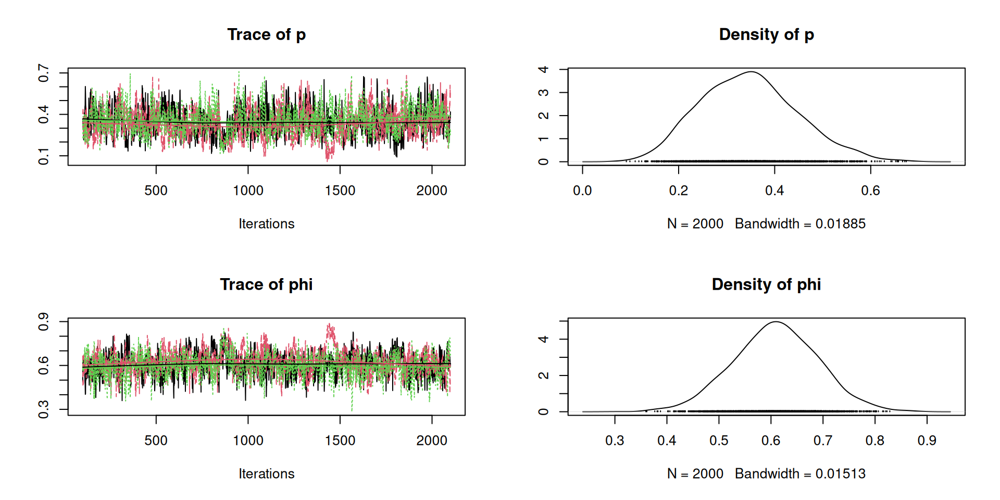
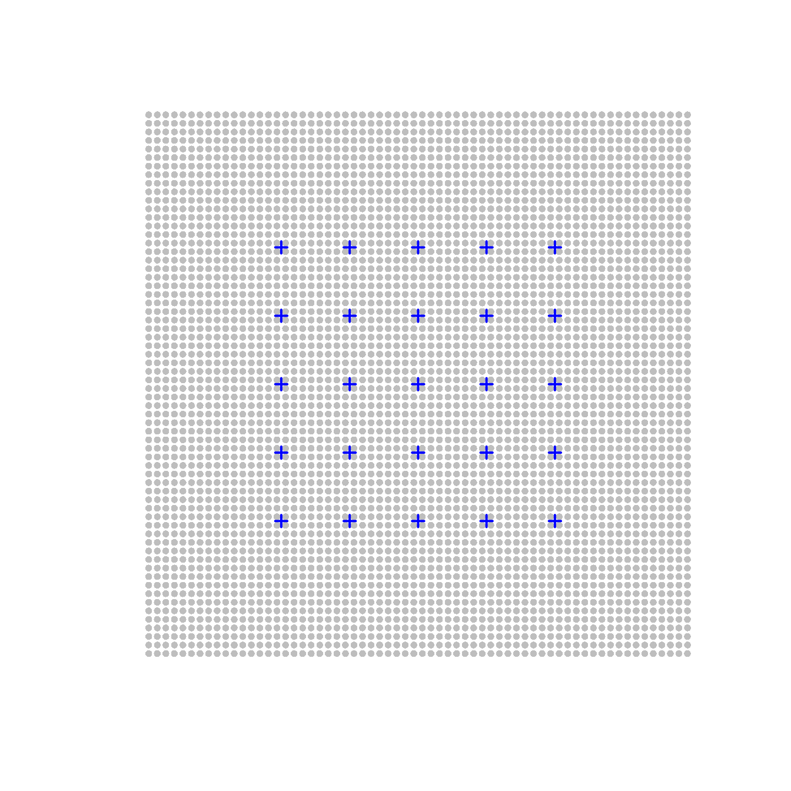
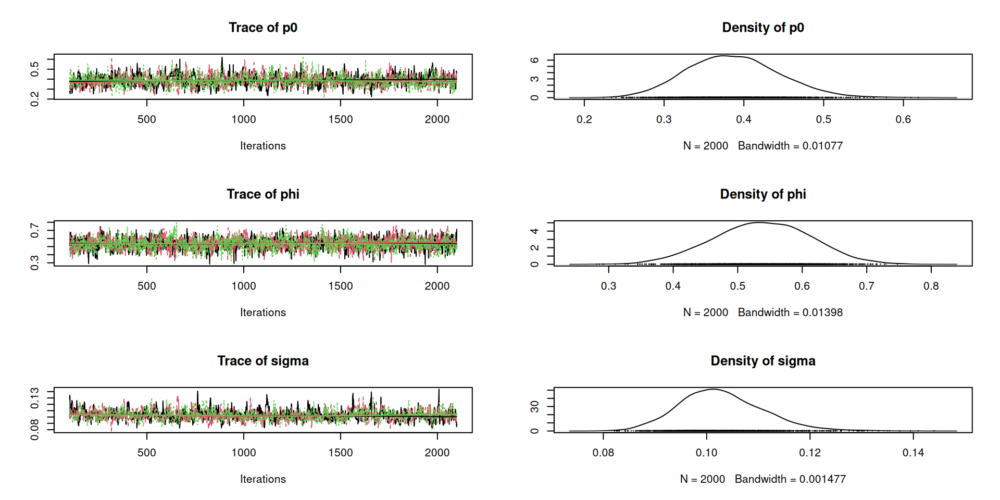
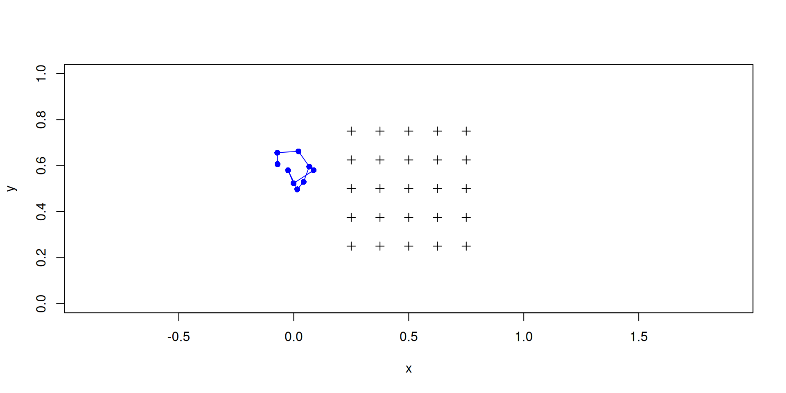
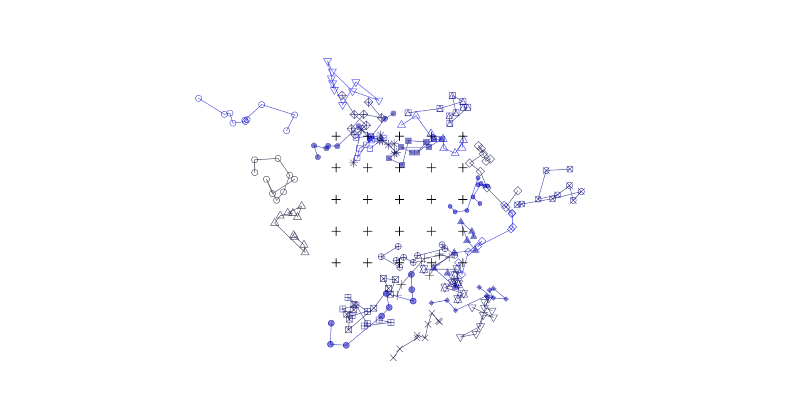
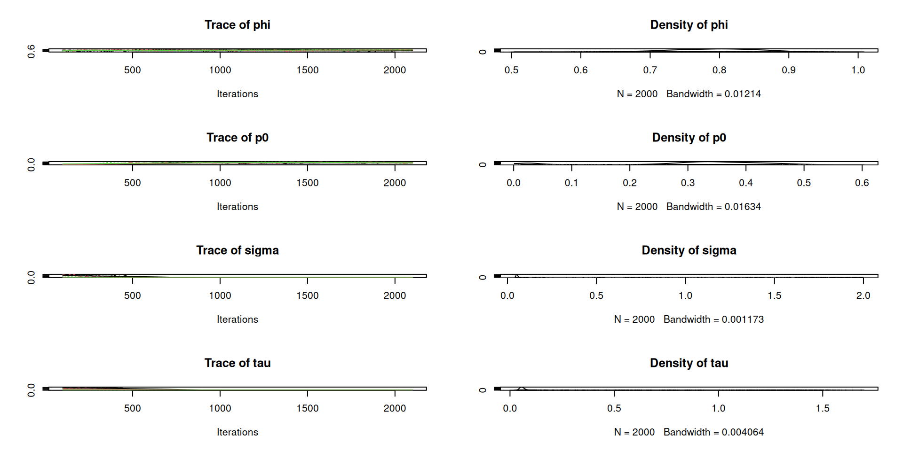
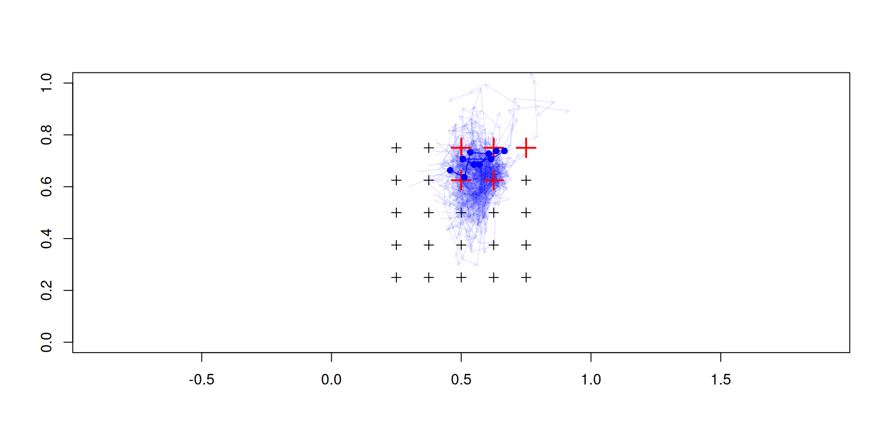

Open Populations and the Spatial Cormack-Jolly-Seber Model
WILD(FISH) 8390
Inference for Models of Fish and Wildlife Population Dynamics
Overview
Geographic closure
Demographic closure
Cormack-Jolly-Seber Model
Jolly-Seber model
Notes
State model \[ z_{i,t} \sim \mbox{Bernoulli}(z_{i,t-1} \times \phi) \]
Observation model \[ y_{i,t} \sim \mbox{Bernoulli}(z_{i,t} \times p) \]
where
Parameters and dimensions
Latent alive/dead state
[,1] [,2] [,3] [,4] [,5] [,6] [,7]
[1,] 1 0 0 0 0 0 0
[2,] NA 1 1 1 1 0 0
[3,] NA 1 1 0 0 0 0
[4,] 1 0 0 0 0 0 0
[5,] 1 1 1 0 0 0 0
[6,] NA 1 1 1 1 0 0
[7,] NA NA 1 0 0 0 0
[8,] NA NA NA 1 1 1 1
[9,] 1 1 0 0 0 0 0
[10,] 1 0 0 0 0 0 0
[11,] 1 1 1 1 0 0 0
[12,] 1 0 0 0 0 0 0
[13,] NA NA 1 0 0 0 0
[14,] 1 0 0 0 0 0 0
[15,] NA 1 1 1 1 0 0
[16,] 1 1 1 1 1 0 0
[17,] 1 0 0 0 0 0 0
[18,] 1 1 1 0 0 0 0
[19,] 1 0 0 0 0 0 0
[20,] NA 1 1 0 0 0 0
[21,] NA NA 1 1 0 0 0
[22,] NA 1 1 1 0 0 0
[23,] NA 1 0 0 0 0 0
[24,] 1 0 0 0 0 0 0
[25,] NA 1 1 1 0 0 0Encounter histories (data)
[,1] [,2] [,3] [,4] [,5] [,6] [,7]
[1,] 1 0 0 0 0 0 0
[2,] NA 1 0 0 1 0 0
[3,] NA 1 0 0 0 0 0
[4,] 1 0 0 0 0 0 0
[5,] 1 0 1 0 0 0 0
[6,] NA 1 0 0 1 0 0
[7,] NA NA 1 0 0 0 0
[8,] NA NA NA 1 0 0 1
[9,] 1 0 0 0 0 0 0
[10,] 1 0 0 0 0 0 0
[11,] 1 1 0 0 0 0 0
[12,] 1 0 0 0 0 0 0
[13,] NA NA 1 0 0 0 0
[14,] 1 0 0 0 0 0 0
[15,] NA 1 0 0 0 0 0
[16,] 1 0 1 0 1 0 0
[17,] 1 0 0 0 0 0 0
[18,] 1 1 0 0 0 0 0
[19,] 1 0 0 0 0 0 0
[20,] NA 1 0 0 0 0 0
[21,] NA NA 1 1 0 0 0
[22,] NA 1 1 1 0 0 0
[23,] NA 1 0 0 0 0 0
[24,] 1 0 0 0 0 0 0
[25,] NA 1 1 1 0 0 0We can fit CJS models in R with the ‘RMark’ or ‘marked’ packages. We’ll use ‘marked’, which requires the capture histories to be formatted as a character vector named ch.
ch
1 1000000000
2 0100100000
3 0100000000You can use formulas to model covariate effects.
Estimates of apparent survival and capture probability.
model {
phi ~ dunif(0,1)
p ~ dunif(0,1)
for(i in 1:n) {
z[i,first[i]] <- 1 ## Known alive at time of release
for(t in (first[i]+1):T) {
z[i,t] ~ dbern(z[i,t-1]*phi) ## Survives with probability phi
y[i,t] ~ dbern(z[i,t]*p) ## Detected with probability p
}
}
}Data
Initial values for \(z\) matrix
Fit the model

Why spatial?
We begin by ignoring movement, but we use the robust design
Parameters and data dimensions
Traps, activity centers, and
detection probability
co <- seq(0.25, 0.75, length=5)
x <- cbind(rep(co, each=5),
rep(co, times=5))
J <- nrow(x)
xlim <- ylim <- c(0,1)
s <- cbind(runif(n, xlim[1], xlim[2]),
runif(n, ylim[1], ylim[2]))
d <- p.sp <- matrix(NA, n, J)
for(i in 1:n) {
d[i,] <- sqrt((s[i,1]-x[,1])^2 +
(s[i,2]-x[,2])^2)
p.sp[i,] <- p0*exp(-d[i,]^2/(2*sigma^2))
}Generate \(z\) and \(y\)
We’ll use the R package ‘openpopscr’1 for model fitting. It isn’t on CRAN, but you can install it from github using the following commands.
If you’re on Windows, you might have to install Rtools first.
Begin by making a mask in ‘secr’

Format for `secr’
Then format for `openpopscr’
Create the model object and then fit it
Back-transform
model {
phi ~ dunif(0,1) ## Apparent survival
p0 ~ dunif(0,1) ## Baseline capture prob
sigma ~ dunif(0, 2) ## Scale parameter of detection function
for(i in 1:n) { ## Loop over individuals
s[i,1] ~ dunif(xlim[1], xlim[2]) # static activity centers
s[i,2] ~ dunif(ylim[1], ylim[2])
for(j in 1:J) { ## Loop over traps
d[i,j] <- sqrt((s[i,1] - x[j,1])^2 + (s[i,2] - x[j,2])^2)
p[i,j] <- p0*exp(-d[i,j]^2/(2*sigma^2)) ## Capture prob
}
z[i,first[i]] <- 1 ## Condition on first encounter
for(t in (first[i]+1):T) {
z[i,t] ~ dbern(z[i,t-1]*phi) ## Model subsequent encounters
for(j in 1:J) {
for(k in 1:K) {
y[i,j,k,t] ~ dbern(z[i,t]*p[i,j])
}
}
}
}
}Data
Initial values for \(z\) matrix
Fit the model

What if activity centers move between years?
Potential movement models}
Parameters and data dimensions
Activity centers take a random walk
## state-space should be bigger
xlim <- ylim <- c(0, 1)
first <- rpois(n, 1)+1
s <- array(NA, c(n, 2, T))
for(i in 1:n) {
s[i,,first[i]] <-
cbind(runif(1, xlim[1], xlim[2]),
runif(1, ylim[1], ylim[2]))
for(t in (first[i]+1):T) {
s[i,1,t] <- rnorm(1, s[i,1,t-1], tau)
s[i,2,t] <- rnorm(1, s[i,2,t-1], tau)
}
}
d <- p <- array(NA, c(n, J, T))
for(i in 1:n) {
for(t in 1:T) {
d[i,,t] <- sqrt((s[i,1,t]-x[,1])^2 +
(s[i,2,t]-x[,2])^2)
p[i,,t] <- p0*exp(-d[i,,t]^2 /
(2*sigma^2))
}
}

model {
phi ~ dunif(0,1)
p0 ~ dunif(0,1)
sigma ~ dunif(0, 2)
tau ~ dunif(0, 2)
tauprec <- 1/tau^2 # must convert tau to precision
for(i in 1:n) {
s[i,1,first[i]] ~ dunif(xlim[1], xlim[2])
s[i,2,first[i]] ~ dunif(ylim[1], ylim[2])
for(j in 1:J) {
d[i,j,first[i]] <- sqrt((s[i,1,first[i]] - x[j,1])^2 + (s[i,2,first[i]] - x[j,2])^2)
p[i,j,first[i]] <- p0*exp(-d[i,j,first[i]]^2/(2*sigma^2))
}
z[i,first[i]] <- 1
for(t in (first[i]+1):T) {
s[i,1,t] ~ dnorm(s[i,1,t-1], tauprec)#T(xlim[1], xlim[2])
s[i,2,t] ~ dnorm(s[i,2,t-1], tauprec)#T(ylim[1], ylim[2])
for(j in 1:J) {
d[i,j,t] <- sqrt((s[i,1,t] - x[j,1])^2 + (s[i,2,t] - x[j,2])^2)
p[i,j,t] <- p0*exp(-d[i,j,t]^2/(2*sigma^2))
}
z[i,t] ~ dbern(z[i,t-1]*phi)
for(j in 1:J) {
y[i,j,t] ~ dbin(z[i,t]*p[i,j,t], K)
# for(k in 1:K) { y[i,j,k,t] ~ dbern(z[i,t]*p[i,j,t]) }
} } }
}Data
Initial values for \(z\), and parameters to monitor
zi <- matrix(NA, n, T)
for(i in 1:n) {
zi[i,(first[i]+1):T] <- 1
}
ji.sp.move <- function() list(phi=runif(1), z=zi, s=s) ## Cheating with s
jp.sp.move <- c("phi", "p0", "sigma", "tau")
good1 <- which.max(rowSums(z, na.rm=TRUE)+rowSums(y.move, na.rm=TRUE))
time1 <- first[good1]:T
jp.s1x <- paste0("s[", good1, ",1,", time1, "]")
jp.s1y <- paste0("s[", good1, ",2,", time1, "]")
jp.z1 <- paste0("z[", good1, ",", time1, "]") Fit the model


Spatial CJS models allow for inference about survival, movement, and capture probability.
We could have considered many other movement models.
Next, we’ll use Jolly-Seber models to study spatio-temporal variation in abundance and recruitment.